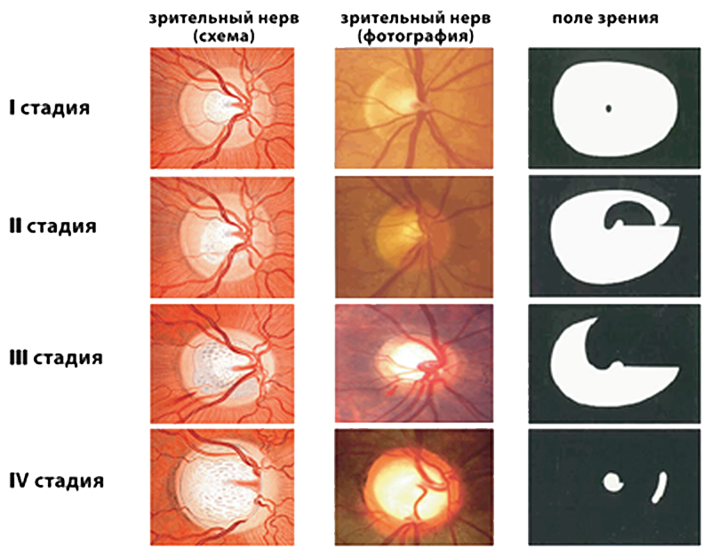
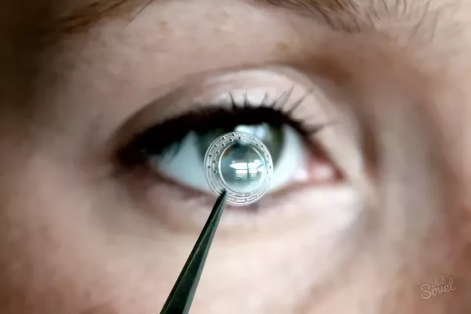
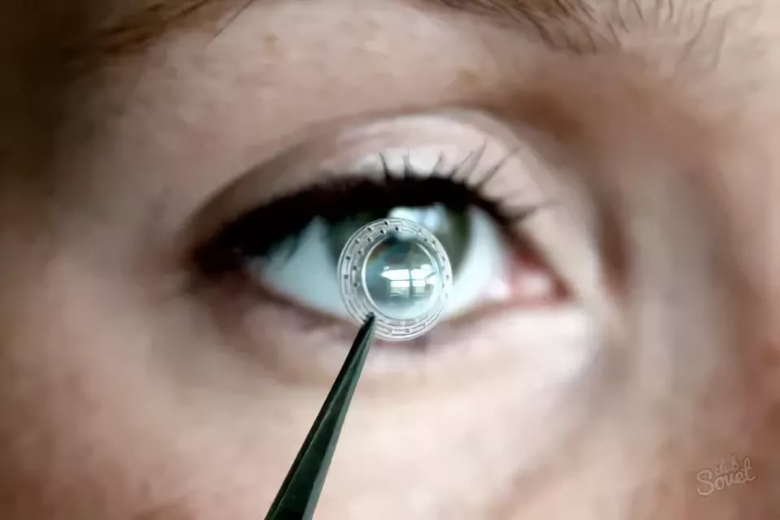

ЭЛЕУТЕРОКОККА
ШИПОВНИКА ПЛОДЫ (ИЗМЕЛЬЧЕННЫЕ)
ШАЛФЕЯ ЛИСТ
ЧЕРНИКИ ПЛОДЫ
ЧЕРЕДЫ ТРАВА
ЧАГА
СОСНОВЫЕ ПОЧКИ
ЧАБРЕЦА ТРАВА
ХВОЩА ТРАВА
УСПОКОИТЕЛЬНЫЙ


Боль в глазу
Классификация
Согласно классификации, основанной на причинах, из-за которых возникает боль, выделяются несколько видов:
—травматические;
—механические, связанные с попаданием в глаз пыли, частиц или при ношении контактных линз;
—вызванные перенапряжением мышц или головными болями;
—обусловленные воспалительными или не воспалительными заболеваниями;
—возникающие вследствие ожогов;
—связанные с инфекционными болезнями;
—синдром сухого глаза;
—вызванные нарушениями в работе нервно или сосудистой системах.
По характеру боль в глазах может быть различной.
—ноющая,
—колющая,
—давящая,
—режущая,
—раздирающая,
—горящая боль.
Причины и симптомы
Ячмень
Блефарит
Осложнения
Лечение

 
